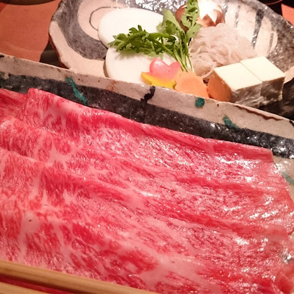
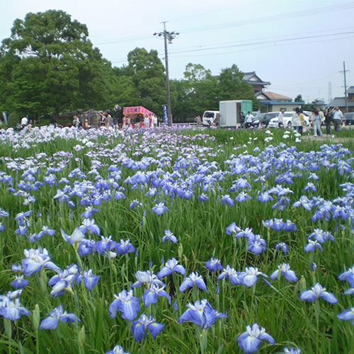
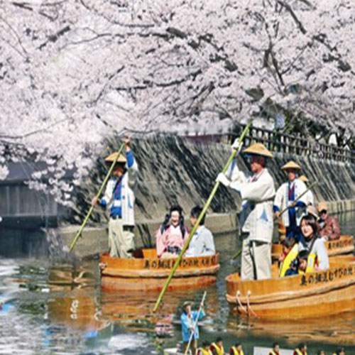

Overview
Ogaki City locates "just in the center of Japan". Many rivers run in the city and also has much under-ground water. So Ogaki is called "Water-City".
Ogski prospered in 16C as a front city of a castle. This castle has rare for-layer towers and beautiful white walls. Even now, you can enjoy the castle and its historical townspace.
FOOD

"Restaurant Nikusho"
Gifu is famous for Hida-Beef which is produced in the mountains there. Here is the restaurant where you can enjoy it through Shabushabu.
SITE

"Sonejo Park"
This is the city-heritage park. It has a broad pour and iris garden. You can enjoy the blue sightseeing all around in June.
ACTIVITY

"River Trip with Tub-Ship"
You are carried 1.1km in city river with a tub-formed ship. There are few places where you can have such an experience.